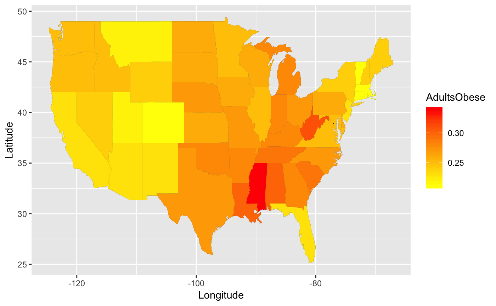
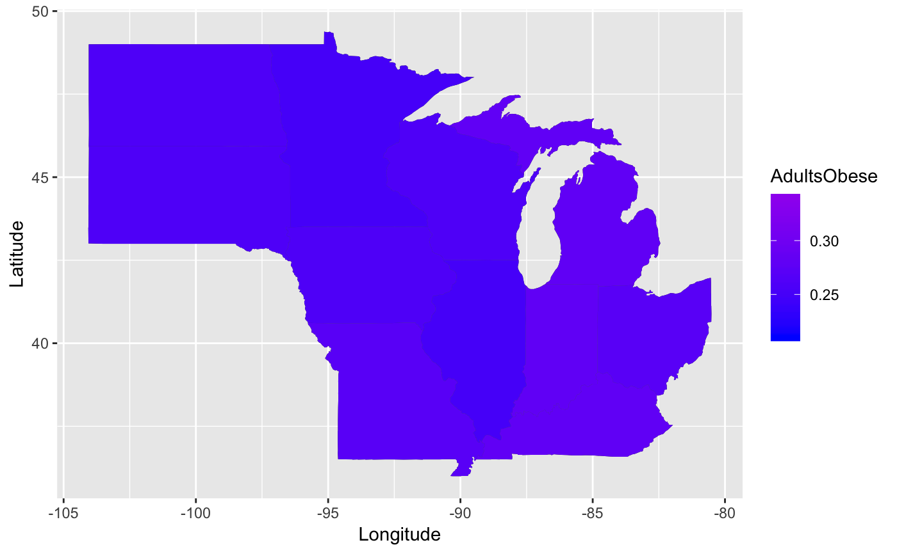
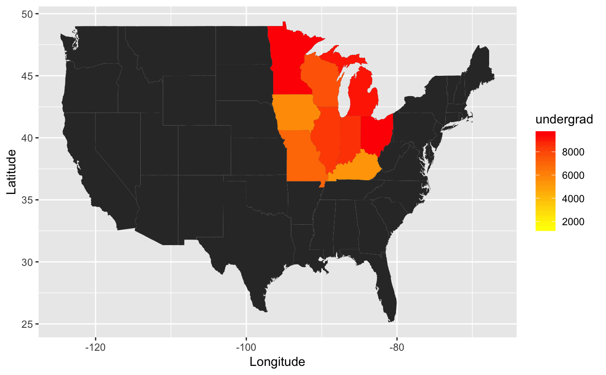

fredMaps.RdfredMaps creates a chloropleth map of the continental United States.
The color and intensity of the fill are based on the values of a user specified variable.
fredMaps(data, x, state_col, low = "yellow", high = "red", states = NULL)
| data | A dataframe containing a variable to plot and a variable of state names |
|---|---|
| x | A variable in |
| state_col | The variable in |
| low | Color of lower values of |
| high | Color of higher values of |
| states | If specified, plots list of states provided |
A ggplot2 object
fredMaps(data = obese, x = AdultsObese, state_col = State)#> Warning: District of Columbia is not a statefredMaps(obese, AdultsObese, State, low = "blue", high = "purple", states = c("illinois", "indiana", "iowa", "kentucky", "michigan", "minnesota","missouri", "north dakota", "ohio", "south dakota", "wisconsin"))#> Warning: District of Columbia is not a statefredMaps(data = college_enrollment, x = undergrad, state_col = state)